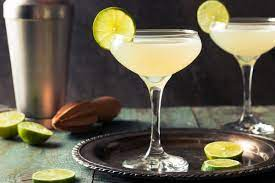

Daiquiri

Cuenta la historia más extendida sobre la creación del Daiquiri que el cóctel fue creación de un ingeniero estadounidense, de nombre Jennings Cox, que trabajaba en una mina próxima a la playa de Daiquiri, junto a Santiago de Cuba.
Ingredientes
- Ron blanco 50ml o 2 onzas
- Zumo de lima 25ml o 1 onza
- 1 Cucharilla de azúcar o 3/4 de jarabe simple o azúcar líquida
- Hielo y servir en vaso de cóctel frío
Preparación
- Con ayuda del vaso medidor vertemos el zumo de lima, el azúcar y el rón blanco.
- Después añadimos cuatro o cinco cubos de hielo, tapamos y agitamos la coctelera durante 15 segundos
- Doble colamos y servimos
